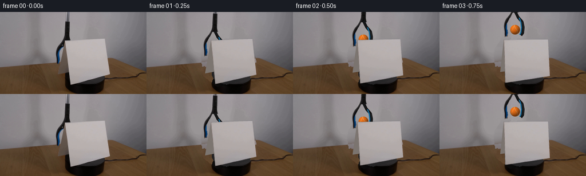
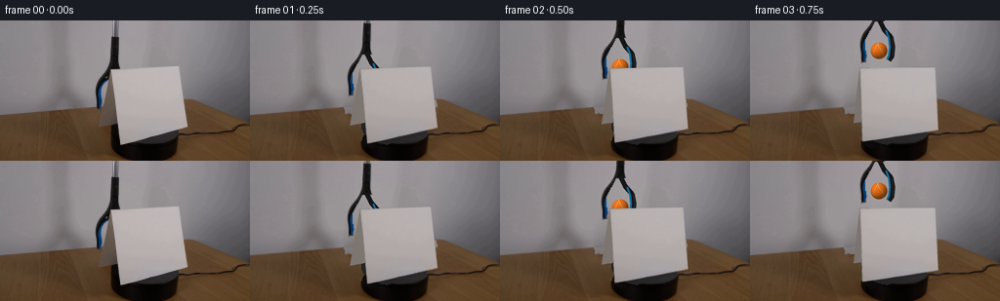
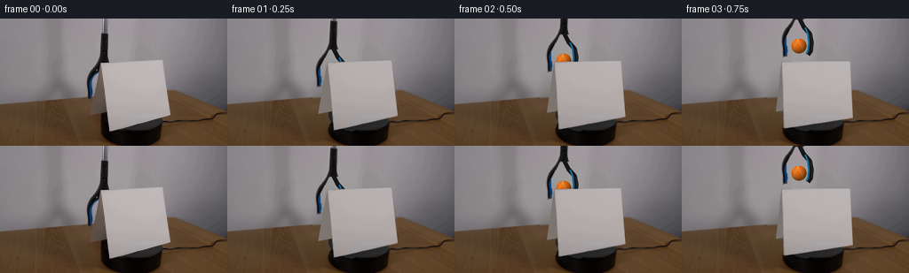
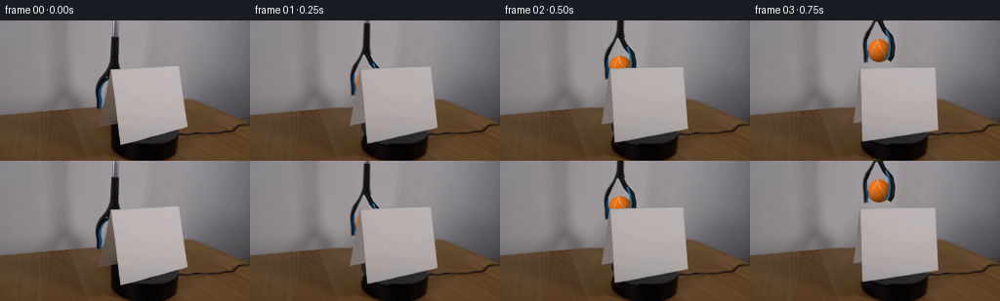
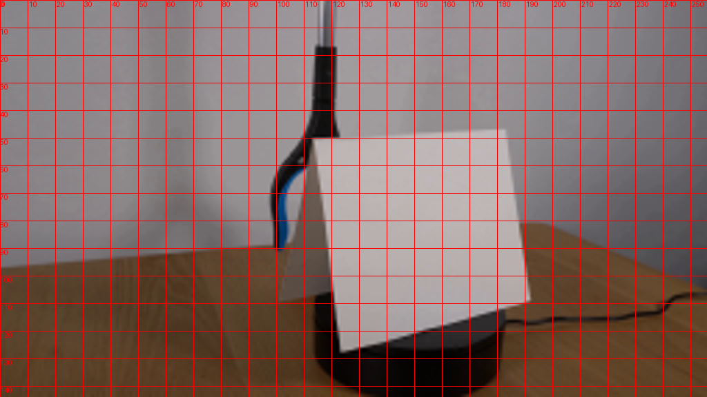
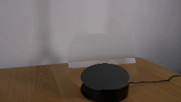
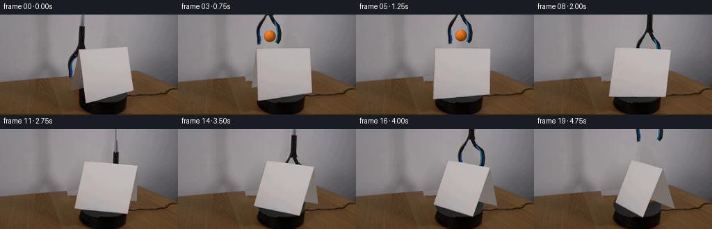
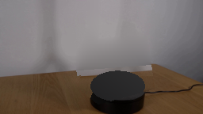
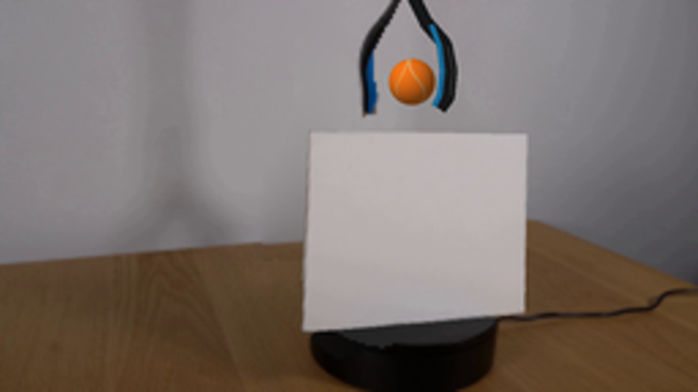
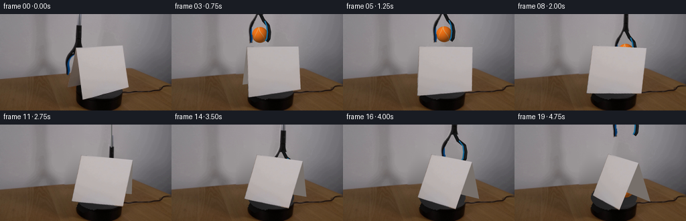

CODING AGENTS AS PIXEL WORLD MODELS
traex/GPT-6.1-Sol · 0004
点击播放 · 原生 RGB 像素
逐轮保存的候选
回放视频、检查图与代码变化。
每份候选均可单独播放。实际图片检查记录在下方工具轨迹中。
候选 01播放与检查图
点击播放 · 原生 RGB 像素


展开代码变化
--- 上一保存版本
+++ 本次保存版本
@@ -0,0 +1,195 @@
+from pathlib import Path
+import math
+import numpy as np
+from PIL import Image, ImageDraw, ImageFilter
+import cv2
+from scipy.ndimage import gaussian_filter
+from artifact_io import save
+
+ROOT=Path(__file__).parent
+W,H=256,144
+S=4
+src=np.asarray(Image.open(ROOT/'first_frame.png').convert('RGB'))
+# Calibration of the folded sheet from its five visible image vertices.
+p=np.array([3.86587625,.350748522,.550317575,.80139045,.227639354,.434905661,.063556824,.102900538,150.060141,112.517972])
+D,e,th,hh,df,db,au,av,cx,cy=p
+f=300.
+u=np.array([math.cos(th),math.sin(th),0]); v=np.array([-math.sin(th),math.cos(th),0])
+verts=np.array([u*(-.5+au)+v*av+[0,0,hh],u*(.5+au)+v*av+[0,0,hh],-u*.5-v*df,u*.5-v*df,-u*.5+v*db,u*.5+v*db])
+initial=np.array([[113,50],[182.6,47],[123.2,127.7],[191.4,109.5],[101,109.2]])
+def project(a):
+ z=D+math.cos(e)*a[:,1]-math.sin(e)*a[:,2]
+ return np.stack([cx+f*a[:,0]/z,cy+f*(-math.sin(e)*a[:,1]-math.cos(e)*a[:,2])/z],1), z
+# Tiny lens/perspective discrepancies are retained in the 3D vertices.
+for i in range(5):
+ z=project(verts[i:i+1])[1][0]
+ x=(initial[i,0]-cx)*z/f
+ t=(initial[i,1]-cy)*z/f
+ yy=(z-D)*math.cos(e)-t*math.sin(e)
+ zz=-(z-D)*math.sin(e)-t*math.cos(e)
+ verts[i]=[x,yy,zz]
+verts[5]=verts[4]+verts[3]-verts[2]
+front0=initial[[0,1,3,2]].astype(np.float32)
+# Preserve photographic sheet texture, rather than replacing it with flat white.
+texN=320
+uv=np.array([[0,0],[texN-1,0],[texN-1,texN-1],[0,texN-1]],np.float32)
+texture=cv2.warpPerspective(src,cv2.getPerspectiveTransform(front0,uv),(texN,texN),flags=cv2.INTER_LINEAR)
+texture=cv2.GaussianBlur(texture,(3,3),.5)
+
+# The only unseen background is a small piece of wall and tabletop behind the props.
+mask=Image.new('L',(W,H)); dr=ImageDraw.Draw(mask)
+dr.polygon([(112,49),(184,46),(193,111),(124,130),(100,111),(111,50)],fill=255)
+dr.polygon([(112,0),(123,0),(123,51),(114,55),(109,62),(104,69),(104,91),(98,94),(96,78),(97,65),(104,55),(110,43)],fill=255)
+m=np.array(mask)>0
+m=cv2.dilate(m.astype(np.uint8),np.ones((3,3),np.uint8)).astype(bool)
+base=src.astype(float).copy()
+# Row-wise interpolation faithfully keeps the fixed wall's low-frequency illumination.
+wallblur=gaussian_filter(src.astype(float),(3,3,0))
+for y in range(H):
+ xs=np.where(m[y])[0]
+ if len(xs)==0: continue
+ if y<81:
+ a=max(0,xs[0]-4); b=min(255,xs[-1]+4)
+ t=(xs-a)/(b-a)
+ for c in range(3): base[y,xs,c]=(1-t)*wallblur[y,a,c]+t*wallblur[y,b,c]
+ else:
+ for x in xs:
+ # Adjacent timber from the same photograph supplies fine natural grain.
+ qx=max(8,x-95)
+ base[y,x]=src[y,qx].astype(float)*np.array([1.07,1.04,1.03])
+# Restore the tabletop/wall seam across the removed setup.
+for y in range(79,96):
+ for x in range(95,195):
+ if not m[y,x]: continue
+ seam=94-.068*x if x<194 else 81
+ if y < seam:
+ a=92;b=197
+ t=(x-a)/(b-a)
+ base[y,x]=wallblur[y,a]*(1-t)+wallblur[y,b]*t
+# Reconstruct just the hidden part of the black rotary platform; known pixels stay intact.
+yy,xx=np.mgrid[:H,:W]
+ell=((xx-148)/34.4)**2+((yy-108.3)/19.4)**2
+platform=ell<=1
+cyl=(((xx-148)/34.4)**2+((yy-125.0)/19.4)**2<=1)&(yy>=108.3)
+for y in range(H):
+ for x in range(W):
+ if not m[y,x]: continue
+ if cyl[y,x]:
+ value=7+8*(abs(x-148)/34)**3+1.8*math.sin(x*.11)
+ base[y,x]=[value+1,value,value-.7]
+ if platform[y,x]:
+ val=40+4*(x-148)/34+3*(108-y)/20
+ base[y,x]=[val+.5,val,val+1]
+base=np.uint8(np.clip(base,0,255))
+Image.fromarray(base).save(ROOT/'.tmp/background.png')
+
+# Exact photographic left tong and telescoping shaft.
+toolmask=Image.new('L',(W,H)); dd=ImageDraw.Draw(toolmask)
+dd.polygon([(114,0),(120.5,0),(121.5,17),(121.3,35),(122,48.8),(112.6,49.8),(109.7,55),(105.7,61),(102.5,68),(102.5,77),(104,84),(103.0,90.5),(99.3,91),(98.2,84),(97.6,77),(97.5,69),(99.5,62),(104,55),(109.5,46),(112,38),(112.8,17)],fill=255)
+tool_rgba=np.dstack([src,np.asarray(toolmask)])
+# Supersampled rendering of cardstock, metal/plastic tongs and the felt ball.
+background=Image.fromarray(base).resize((W*S,H*S),Image.Resampling.BICUBIC)
+texture_hi=texture
+rng=np.random.default_rng(11)
+noise=rng.normal(0,.85,(H*S,W*S))
+
+def ease(a):return a*a*(3-2*a)
+def position(i):
+ # Held behind the initial card, lifted into view, then carried over the ridge.
+ key=[(0,117,79),(1,119,65),(2,123,48),(3,132,31),(4,143,28),(5,151,30),(6,158,35),(7,164,44),(8,166,56),(9,167,70),(10,166,83),(11,166,95),(12,166,97),(19,166,97)]
+ for (ta,xa,ya),(tb,xb,yb) in zip(key,key[1:]):
+ if ta<=i<=tb:
+ q=ease((i-ta)/(tb-ta));return xa+(xb-xa)*q,ya+(yb-ya)*q
+ return 166,97
+
+def ball_layer(bx,by,r=8.6):
+ layer=np.zeros((H*S,W*S,4),np.uint8)
+ y,x=np.mgrid[:H*S,:W*S]; nx=(x/S-bx)/r; ny=(y/S-by)/r
+ d=nx*nx+ny*ny; nz=np.sqrt(np.maximum(0,1-d));
+ lum=np.maximum(0,-.42*nx-.55*ny+.71*nz)
+ shade=.43+.57*lum
+ cols=np.stack([239*shade+9,111*shade+8,20*shade+5],-1)
+ # Fuzzy, curved off-white tennis-ball seam seen on the spherical surface.
+ seam=np.abs(nx-.34*np.sin(ny*2.5)-.33*nz)
+ seam2=np.abs(nx+.25*np.sin(ny*2.9)+.72*nz)
+ band=np.maximum(np.exp(-(seam/.042)**2),np.exp(-(seam2/.035)**2))
+ felt=np.stack([211*shade+9,193*shade+8,142*shade+6],-1)
+ cols=cols*(1-band[...,None]*.87)+felt*band[...,None]*.87
+ cols+=noise[...,None]*1.5
+ alpha=np.clip((1-d)*r*S/1.3,0,1)*255
+ layer[:,:,:3]=np.uint8(np.clip(cols,0,255));layer[:,:,3]=alpha.astype(np.uint8)
+ return Image.fromarray(layer)
+
+def polygon_layer(points,color):
+ layer=Image.new('RGBA',(W*S,H*S));d=ImageDraw.Draw(layer)
+ d.polygon([tuple(a*S) for a in points],fill=tuple(color)+(255,))
+ return layer
+
+def tool_layer(bx,by,withdraw,opened):
+ dx=bx-117;dy=by-79-withdraw
+ mat=np.array([[1,0,dx],[0,1,dy]],float)
+ arr=cv2.warpAffine(tool_rgba,mat,(W,H),flags=cv2.INTER_LINEAR,borderMode=cv2.BORDER_CONSTANT)
+ lay=Image.fromarray(arr).resize((W*S,H*S),Image.Resampling.BICUBIC)
+ # The far blue-lined tong was originally occluded by the card.
+ draw=ImageDraw.Draw(lay)
+ def path(coords,col,width):
+ draw.line([(int((bx+x)*S),int((by-withdraw+y)*S)) for x,y in coords],fill=col,width=int(width*S),joint='curve')
+ spread=3*opened
+ path([(0,-32),(5,-22),(12+spread,-14),(14+spread,-4),(13+spread,6),(10+spread,10)],(21,22,23,255),5)
+ path([(7,-21),(10+spread,-13),(11+spread,-4),(10+spread,5),(8+spread,9)],(23,105,151,255),2.2)
+ path([(13+spread,-13),(15+spread,-4),(14+spread,5)],(44,44,43,220),.7)
+ return lay
+
+def card_layers(angle):
+ ca,sa=math.cos(angle),math.sin(angle)
+ rot=np.array([[ca,-sa,0],[sa,ca,0],[0,0,1]])
+ vv=verts@rot.T
+ pts,z=project(vv)
+ # Two actual folded rectangular sheets, depth sorted.
+ faces=[([0,1,3,2],'front'),([0,1,5,4],'back')]
+ layers=[]
+ for ids,kind in faces:
+ poly=pts[ids].astype(np.float32)
+ if kind=='front':
+ M=cv2.getPerspectiveTransform(uv,poly*S)
+ ar=cv2.warpPerspective(texture_hi,M,(W*S,H*S),flags=cv2.INTER_LINEAR,borderMode=cv2.BORDER_REPLICATE)
+ # Diffuse illumination changes gently with orientation.
+ normal=rot@(-v)
+ light=.89+.11*max(0,-normal[1])-.055*normal[0]
+ ar=np.uint8(np.clip(ar.astype(float)*light,0,255))
+ al=Image.new('L',(W*S,H*S));ImageDraw.Draw(al).polygon([tuple(a*S) for a in poly],fill=255)
+ layer=Image.fromarray(np.dstack([ar,np.asarray(al)]))
+ else:
+ n=rot@v
+ # The reverse starts in shade and brightens as it faces the room light.
+ val=116+31*max(0,-n[1])+13*max(0,-n[0])
+ layer=polygon_layer(poly,[int(val+3),int(val-4),int(val-9)])
+ ar=np.array(layer)
+ grad=np.clip((112-yy.repeat(S,0).repeat(S,1))*.032,-3,3)
+ ar[:,:,:3]=np.clip(ar[:,:,:3].astype(float)+grad[...,None]+noise[...,None]*.25,0,255).astype(np.uint8)
+ layer=Image.fromarray(ar)
+ layers.append((np.mean(z[ids]),layer))
+ layers.sort(key=lambda a:-a[0])
+ return layers,pts
+
+def make_frame(i):
+ if i==0:return src.copy()
+ # Clockwise, approximately one quarter revolution over the five second shot.
+ angle=-math.radians(19.0)*i/4
+ im=background.convert('RGBA')
+ bx,by=position(i)
+ # Cast soft shadows belonging only to the ball and folded card.
+ sh=Image.new('RGBA',im.size);dd=ImageDraw.Draw(sh)
+ if i>=9:
+ opacity=int(12+min(1,(i-9)/3)*31)
+ dd.ellipse(((bx-10)*S,105*S,(bx+13)*S,111*S),fill=(16,10,3,opacity))
+ sh=sh.filter(ImageFilter.GaussianBlur(2*S));im.alpha_composite(sh)
+ im.alpha_composite(ball_layer(bx,by))
+ withdrawn=max(0,i-12)*13
+ im.alpha_composite(tool_layer(bx,by,withdrawn,min(1,max(0,i-11)/2)))
+ layers,pts=card_layers(angle)
+ for _,lay in layers: im.alpha_composite(lay)
+ im=im.convert('RGB').resize((W,H),Image.Resampling.LANCZOS)
+ return np.asarray(im)
+frames=np.stack([make_frame(i) for i in range(20)]).astype(np.uint8)
+save(frames,ROOT)
候选 02播放与检查图
点击播放 · 原生 RGB 像素


展开代码变化
--- 上一保存版本
+++ 本次保存版本
@@ -43,31 +43,48 @@
m=np.array(mask)>0
m=cv2.dilate(m.astype(np.uint8),np.ones((3,3),np.uint8)).astype(bool)
base=src.astype(float).copy()
-# Row-wise interpolation faithfully keeps the fixed wall's low-frequency illumination.
-wallblur=gaussian_filter(src.astype(float),(3,3,0))
-for y in range(H):
- xs=np.where(m[y])[0]
- if len(xs)==0: continue
- if y<81:
- a=max(0,xs[0]-4); b=min(255,xs[-1]+4)
- t=(xs-a)/(b-a)
- for c in range(3): base[y,xs,c]=(1-t)*wallblur[y,a,c]+t*wallblur[y,b,c]
- else:
- for x in xs:
- # Adjacent timber from the same photograph supplies fine natural grain.
- qx=max(8,x-95)
- base[y,x]=src[y,qx].astype(float)*np.array([1.07,1.04,1.03])
-# Restore the tabletop/wall seam across the removed setup.
-for y in range(79,96):
- for x in range(95,195):
- if not m[y,x]: continue
- seam=94-.068*x if x<194 else 81
- if y < seam:
- a=92;b=197
- t=(x-a)/(b-a)
- base[y,x]=wallblur[y,a]*(1-t)+wallblur[y,b]*t
-# Reconstruct just the hidden part of the black rotary platform; known pixels stay intact.
yy,xx=np.mgrid[:H,:W]
+seam=96.1-.077*xx
+wall=(yy<seam)
+# A smooth wall fit supplies the unobserved part across the table boundary.
+X=(xx-128)/128.;Y=(yy-60)/80.
+terms=[np.ones_like(X),X,Y,X*X,X*Y,Y*Y,X**3,X*X*Y,X*Y*Y,Y**3,X**4]
+valid=wall & (~cv2.dilate(m.astype(np.uint8),np.ones((7,7),np.uint8)).astype(bool))
+A=np.stack([t[valid] for t in terms],1)
+co=np.linalg.lstsq(A,src[valid].astype(float),rcond=None)[0]
+wallfit=np.stack(terms,-1)@co
+# Harmonic interpolation respects the real adjacent wall without copying card edges.
+from scipy.sparse import lil_matrix
+from scipy.sparse.linalg import spsolve
+unknown=m & wall
+inds=np.full((H,W),-1,int);inds[unknown]=np.arange(unknown.sum())
+M=lil_matrix((unknown.sum(),unknown.sum()));rhs=np.zeros((unknown.sum(),3))
+for y,x in zip(*np.where(unknown)):
+ k=inds[y,x];n=0
+ for dy,dx in [(-1,0),(1,0),(0,-1),(0,1)]:
+ y1=y+dy;x1=x+dx
+ if not (0<=y1<H and 0<=x1<W):continue
+ n+=1
+ if unknown[y1,x1]: M[k,inds[y1,x1]]=-1
+ else:rhs[k]+=src[y1,x1] if wall[y1,x1] else wallfit[y1,x1]
+ M[k,k]=n
+base[unknown]=spsolve(M.tocsr(),rhs)
+# Photographic wood texture with a fitted illumination field, not a flat fill.
+blur=gaussian_filter(src.astype(float),(2,2,0))
+wood=(~wall)&(~m)&(xx<109)
+A2=np.stack([np.ones_like(X),X,Y,X*X,X*Y,Y*Y],-1)
+co2=np.linalg.lstsq(A2[wood],blur[wood],rcond=None)[0]
+# Keep the fit anchored locally to the visible left- and right-hand tabletop.
+woodfit=A2@co2
+for y,x in zip(*np.where(m & (~wall))):
+ qx=max(5,x-94)
+ grain=src[y,qx].astype(float)-blur[y,qx]
+ l=blur[y,93];r=blur[y,199]
+ t=np.clip((x-93)/106,0,1)
+ low=(1-t)*l+t*r
+ if y<96: low=blur[y,qx]+np.array([6.,4.,2.])
+ base[y,x]=low+grain*.9
+# Reconstruct only the region of the rotating platform hidden in the first frame.
ell=((xx-148)/34.4)**2+((yy-108.3)/19.4)**2
platform=ell<=1
cyl=(((xx-148)/34.4)**2+((yy-125.0)/19.4)**2<=1)&(yy>=108.3)
@@ -80,6 +97,11 @@
if platform[y,x]:
val=40+4*(x-148)/34+3*(108-y)/20
base[y,x]=[val+.5,val,val+1]
+# Subpixel softness of the photographed static contours.
+newbase=base.copy()
+edge=cv2.GaussianBlur(m.astype(float),(5,5),.75)
+blend=np.clip(edge*1.5,0,1)
+base=base*blend[...,None]+src.astype(float)*(1-blend[...,None])
base=np.uint8(np.clip(base,0,255))
Image.fromarray(base).save(ROOT/'.tmp/background.png')
@@ -132,6 +154,11 @@
lay=Image.fromarray(arr).resize((W*S,H*S),Image.Resampling.BICUBIC)
# The far blue-lined tong was originally occluded by the card.
draw=ImageDraw.Draw(lay)
+ if dy>0:
+ sx=(117+dx)*S
+ draw.line([(sx,0),(sx,(dy+18)*S)],fill=(107,108,108,255),width=2*S)
+ draw.line([(sx-.4*S,0),(sx-.4*S,(dy+17)*S)],fill=(165,165,161,255),width=S//2)
+ draw.line([(sx+.8*S,0),(sx+.8*S,(dy+17)*S)],fill=(56,58,59,255),width=S//2)
def path(coords,col,width):
draw.line([(int((bx+x)*S),int((by-withdraw+y)*S)) for x,y in coords],fill=col,width=int(width*S),joint='curve')
spread=3*opened
候选 03播放与检查图
点击播放 · 原生 RGB 像素

展开代码变化
--- 上一保存版本 +++ 本次保存版本 @@ -78,11 +78,14 @@ woodfit=A2@co2 for y,x in zip(*np.where(m & (~wall))): qx=max(5,x-94) - grain=src[y,qx].astype(float)-blur[y,qx] - l=blur[y,93];r=blur[y,199] + qy=min(H-1,y+int(round(.077*(x-qx)))) + grain=src[qy,qx].astype(float)-blur[qy,qx] + ly=int(np.clip(y+round(.077*(x-93)),0,H-1)) + ry=int(np.clip(y+round(.077*(x-199)),0,H-1)) + l=blur[ly,93];r=blur[ry,199] t=np.clip((x-93)/106,0,1) low=(1-t)*l+t*r - if y<96: low=blur[y,qx]+np.array([6.,4.,2.]) + if y<96: low=blur[qy,qx]+np.array([5.,3.,1.]) base[y,x]=low+grain*.9 # Reconstruct only the region of the rotating platform hidden in the first frame. ell=((xx-148)/34.4)**2+((yy-108.3)/19.4)**2
候选 04播放与检查图
点击播放 · 原生 RGB 像素


展开代码变化
--- 上一保存版本
+++ 本次保存版本
@@ -127,7 +127,7 @@
q=ease((i-ta)/(tb-ta));return xa+(xb-xa)*q,ya+(yb-ya)*q
return 166,97
-def ball_layer(bx,by,r=8.6):
+def ball_layer(bx,by,r=11.9):
layer=np.zeros((H*S,W*S,4),np.uint8)
y,x=np.mgrid[:H*S,:W*S]; nx=(x/S-bx)/r; ny=(y/S-by)/r
d=nx*nx+ny*ny; nz=np.sqrt(np.maximum(0,1-d));
@@ -151,14 +151,15 @@
return layer
def tool_layer(bx,by,withdraw,opened):
- dx=bx-117;dy=by-79-withdraw
- mat=np.array([[1,0,dx],[0,1,dy]],float)
+ sx=.86+.14*opened
+ dx=bx-sx*117;dy=by-79-withdraw
+ mat=np.array([[sx,0,dx],[0,1,dy]],float)
arr=cv2.warpAffine(tool_rgba,mat,(W,H),flags=cv2.INTER_LINEAR,borderMode=cv2.BORDER_CONSTANT)
lay=Image.fromarray(arr).resize((W*S,H*S),Image.Resampling.BICUBIC)
# The far blue-lined tong was originally occluded by the card.
draw=ImageDraw.Draw(lay)
if dy>0:
- sx=(117+dx)*S
+ sx=bx*S
draw.line([(sx,0),(sx,(dy+18)*S)],fill=(107,108,108,255),width=2*S)
draw.line([(sx-.4*S,0),(sx-.4*S,(dy+17)*S)],fill=(165,165,161,255),width=S//2)
draw.line([(sx+.8*S,0),(sx+.8*S,(dy+17)*S)],fill=(56,58,59,255),width=S//2)
可观测工具轨迹
实际执行的命令与返回图片。
命令 1exit 0
/bin/bash -lc "ls -la && cat prompt.txt && printf '\\n--- RULES ---\\n' && cat GENERATION_RULES.md"
命令 2exit 0
/bin/bash -lc "cat artifact_io.py && python - <<'PY'
from PIL import Image
im=Image.open('first_frame.png'); print(im.size); im.resize((1024,576)).save('.tmp/first_large.png')
PY"命令 3exit 0
/bin/bash -lc "python - <<'PY' import importlib.util for s in ['numpy','PIL','scipy','cv2']: print(s, bool(importlib.util.find_spec(s))) PY"
命令 4exit 0
/bin/bash -lc "cat > .tmp/fit.py <<'PY' import numpy as np from scipy.optimize import least_squares # u first left, right coords=np.array([[112,51],[183,47],[123,128],[191,110],[101,109]]) f=300 def get(p): D,e,theta,H,depth,cx,cy=p u=np.array([np.cos(theta),np.sin(theta),0]); q=np.array([-np.sin(theta),np.cos(theta),0]); pts=np.array([-u*.5+[0,0,H],u*.5+[0,0,H],-u*.5-q*depth/2,u*.5-q*depth/2,-u*.5+q*depth/2]) z=D+np.cos(e)*pts[:,1]-np.sin(e)*pts[:,2] return np.stack([cx+f*pts[:,0]/z,cy+f*(-np.sin(e)*pts[:,1]-np.cos(e)*pts[:,2])/z],1) def fun(p): return np.r_[(get(p)-coords).flatten(),(p[-2]-147)*.8,(p[-1]-115)*.8] r=least_squares(fun,[4,.38,.5,.95,.6,147,115],bounds=([2,.15,-1,.3,.2,140,105],[8,.8,1.3,1.8,1.2,155,122])) print(r.x); print(get(r.x)); print(r.cost) PY python .tmp/fit.py"
命令 5exit 0
/bin/bash -lc "python - <<'PY'
from PIL import Image,ImageDraw
im=Image.open('first_frame.png').resize((1024,576)); d=ImageDraw.Draw(im)
for x in range(0,256,10):
d.line((x*4,0,x*4,576), fill=(255,0,0),width=1); d.text((x*4+2,0),str(x),fill=(255,0,0))
for y in range(0,144,10):
d.line((0,y*4,1024,y*4),fill=(255,0,0),width=1); d.text((0,y*4),str(y),fill=(255,0,0))
im.save('.tmp/grid.png')
PY"命令 6exit 0
/bin/bash -lc "python - <<'PY'
from PIL import Image
im=Image.open('first_frame.png')
for y in [105,110,115,120,125,130,135,140]:
print(y, [(x,im.getpixel((x,y))) for x in [110,113,115,120,130,145,160,175,180,183,186,190]])
PY"命令 7exit 0
/bin/bash -lc "cat > .tmp/fit2.py <<'PY'
import numpy as np
from scipy.optimize import least_squares
coords=np.array([[113.,50.],[182.6,47.],[123.2,127.7],[191.4,109.5],[101.,109.2]])
f=300.;cx=147.2; cy=116.
def points(p):
D,e,theta,H,df,db,au,av=p
u=np.array([np.cos(theta),np.sin(theta),0]); q=np.array([-np.sin(theta),np.cos(theta),0]);
return np.array([u*(-.5+au)+q*av+[0,0,H],u*(.5+au)+q*av+[0,0,H],-u*.5-q*df,u*.5-q*df,-u*.5+q*db])
def get(p):
D,e=p[:2];pts=points(p)
z=D+np.cos(e)*pts[:,1]-np.sin(e)*pts[:,2]
return np.stack([cx+f*pts[:,0]/z,cy+f*(-np.sin(e)*pts[:,1]-np.cos(e)*pts[:,2])/z],1)
def fun(p):return (get(p)-coords).flatten()
r=least_squares(fun,[4,.3,.5,.8,.35,.25,0,0],bounds=([1,.1,0,.3,.1,.1,-.5,-.5],[9,.7,1.4,2,1,1,.5,.5]))
print(r.x);print(get(r.x));print(r.cost)
np.save('.tmp/params.npy',r.x)
PY
python .tmp/fit2.py"命令 8exit 0
/bin/bash -lc "cat > .tmp/fit3.py <<'PY'
import numpy as np
from scipy.optimize import least_squares
coords=np.array([[113.,50.],[182.6,47.],[123.2,127.7],[191.4,109.5],[101.,109.2]])
f=300.
def points(p):
D,e,theta,H,df,db,au,av,cx,cy=p
u=np.array([np.cos(theta),np.sin(theta),0]); q=np.array([-np.sin(theta),np.cos(theta),0]);
return np.array([u*(-.5+au)+q*av+[0,0,H],u*(.5+au)+q*av+[0,0,H],-u*.5-q*df,u*.5-q*df,-u*.5+q*db])
def get(p):
D,e=p[:2]; cx,cy=p[-2:];pts=points(p)
z=D+np.cos(e)*pts[:,1]-np.sin(e)*pts[:,2]
return np.stack([cx+f*pts[:,0]/z,cy+f*(-np.sin(e)*pts[:,1]-np.cos(e)*pts[:,2])/z],1)
def fun(p):return np.r_[(get(p)-coords).flatten(),(p[-2]-147)*.08,(p[-1]-115)*.03,p[6]*.5]
r=least_squares(fun,[4,.3,.5,.8,.35,.25,0,0,147,115],bounds=([1,.1,0,.3,.1,.1,-.5,-.5,125,100],[9,.7,1.4,2,1,1,.5,.5,168,132]),max_nfev=10000)
print(r.x);print(get(r.x));print(r.cost)
np.save('.tmp/params.npy',r.x)
PY
python .tmp/fit3.py"命令 9exit 0
/bin/bash -lc "cat > generate.py <<'PY'
from pathlib import Path
import math
import numpy as np
from PIL import Image, ImageDraw, ImageFilter
import cv2
from scipy.ndimage import gaussian_filter
from artifact_io import save
ROOT=Path(__file__).parent
W,H=256,144
S=4
src=np.asarray(Image.open(ROOT/'first_frame.png').convert('RGB'))
# Calibration of the folded sheet from its five visible image vertices.
p=np.array([3.86587625,.350748522,.550317575,.80139045,.227639354,.434905661,.063556824,.102900538,150.060141,112.517972])
D,e,th,hh,df,db,au,av,cx,cy=p
f=300.
u=np.array([math.cos(th),math.sin(th),0]); v=np.array([-math.sin(th),math.cos(th),0])
verts=np.array([u*(-.5+au)+v*av+[0,0,hh],u*(.5+au)+v*av+[0,0,hh],-u*.5-v*df,u*.5-v*df,-u*.5+v*db,u*.5+v*db])
initial=np.array([[113,50],[182.6,47],[123.2,127.7],[191.4,109.5],[101,109.2]])
def project(a):
z=D+math.cos(e)*a[:,1]-math.sin(e)*a[:,2]
return np.stack([cx+f*a[:,0]/z,cy+f*(-math.sin(e)*a[:,1]-math.cos(e)*a[:,2])/z],1), z
# Tiny lens/perspective discrepancies are retained in the 3D vertices.
for i in range(5):
z=project(verts[i:i+1])[1][0]
x=(initial[i,0]-cx)*z/f
t=(initial[i,1]-cy)*z/f
yy=(z-D)*math.cos(e)-t*math.sin(e)
zz=-(z-D)*math.sin(e)-t*math.cos(e)
verts[i]=[x,yy,zz]
verts[5]=verts[4]+verts[3]-verts[2]
front0=initial[[0,1,3,2]].astype(np.float32)
# Preserve photographic sheet texture, rather than replacing it with flat white.
texN=320
uv=np.array([[0,0],[texN-1,0],[texN-1,texN-1],[0,texN-1]],np.float32)
texture=cv2.warpPerspective(src,cv2.getPerspectiveTransform(front0,uv),(texN,texN),flags=cv2.INTER_LINEAR)
texture=cv2.GaussianBlur(texture,(3,3),.5)
# The only unseen background is a small piece of wall and tabletop behind the props.
mask=Image.new('L',(W,H)); dr=ImageDraw.Draw(mask)
dr.polygon([(112,49),(184,46),(193,111),(124,130),(100,111),(111,50)],fill=255)
dr.polygon([(112,0),(123,0),(123,51),(114,55),(109,62),(104,69),(104,91),(98,94),(96,78),(97,65),(104,55),(110,43)],fill=255)
m=np.array(mask)>0
m=cv2.dilate(m.astype(np.uint8),np.ones((3,3),np.uint8)).astype(bool)
base=src.astype(float).copy()
# Row-wise interpolation faithfully keeps the fixed wall's low-frequency illumination.
wallblur=gaussian_filter(src.astype(float),(3,3,0))
for y in range(H):
xs=np.where(m[y])[0]
if len(xs)==0: continue
if y<81:
a=max(0,xs[0]-4); b=min(255,xs[-1]+4)
t=(xs-a)/(b-a)
for c in range(3): base[y,xs,c]=(1-t)*wallblur[y,a,c]+t*wallblur[y,b,c]
else:
for x in xs:
# Adjacent timber from the same photograph supplies fine natural grain.
qx=max(8,x-95)
base[y,x]=src[y,qx].astype(float)*np.array([1.07,1.04,1.03])
# Restore the tabletop/wall seam across the removed setup.
for y in range(79,96):
for x in range(95,195):
if not m[y,x]: continue
seam=94-.068*x if x<194 else 81
if y < seam:
a=92;b=197
t=(x-a)/(b-a)
base[y,x]=wallblur[y,a]*(1-t)+wallblur[y,b]*t
# Reconstruct just the hidden part of the black rotary platform; known pixels stay intact.
yy,xx=np.mgrid[:H,:W]
ell=((xx-148)/34.4)**2+((yy-108.3)/19.4)**2
platform=ell<=1
cyl=(((xx-148)/34.4)**2+((yy-125.0)/19.4)**2<=1)&(yy>=108.3)
for y in range(H):
for x in range(W):
if not m[y,x]: continue
if cyl[y,x]:
value=7+8*(abs(x-148)/34)**3+1.8*math.sin(x*.11)
base[y,x]=[value+1,value,value-.7]
if platform[y,x]:
val=40+4*(x-148)/34+3*(108-y)/20
base[y,x]=[val+.5,val,val+1]
base=np.uint8(np.clip(base,0,255))
Image.fromarray(base).save(ROOT/'.tmp/background.png')
# Exact photographic left tong and telescoping shaft.
toolmask=Image.new('L',(W,H)); dd=ImageDraw.Draw(toolmask)
dd.polygon([(114,0),(120.5,0),(121.5,17),(121.3,35),(122,48.8),(112.6,49.8),(109.7,55),(105.7,61),(102.5,68),(102.5,77),(104,84),(103.0,90.5),(99.3,91),(98.2,84),(97.6,77),(97.5,69),(99.5,62),(104,55),(109.5,46),(112,38),(112.8,17)],fill=255)
tool_rgba=np.dstack([src,np.asarray(toolmask)])
# Supersampled rendering of cardstock, metal/plastic tongs and the felt ball.
background=Image.fromarray(base).resize((W*S,H*S),Image.Resampling.BICUBIC)
texture_hi=texture
rng=np.random.default_rng(11)
noise=rng.normal(0,.85,(H*S,W*S))
def ease(a):return a*a*(3-2*a)
def position(i):
# Held behind the initial card, lifted into view, then carried over the ridge.
key=[(0,117,79),(1,119,65),(2,123,48),(3,132,31),(4,143,28),(5,151,30),(6,158,35),(7,164,44),(8,166,56),(9,167,70),(10,166,83),(11,166,95),(12,166,97),(19,166,97)]
for (ta,xa,ya),(tb,xb,yb) in zip(key,key[1:]):
if ta<=i<=tb:
q=ease((i-ta)/(tb-ta));return xa+(xb-xa)*q,ya+(yb-ya)*q
return 166,97
def ball_layer(bx,by,r=8.6):
layer=np.zeros((H*S,W*S,4),np.uint8)
y,x=np.mgrid[:H*S,:W*S]; nx=(x/S-bx)/r; ny=(y/S-by)/r
d=nx*nx+ny*ny; nz=np.sqrt(np.maximum(0,1-d));
lum=np.maximum(0,-.42*nx-.55*ny+.71*nz)
shade=.43+.57*lum
cols=np.stack([239*shade+9,111*shade+8,20*shade+5],-1)
# Fuzzy, curved off-white tennis-ball seam seen on the spherical surface.
seam=np.abs(nx-.34*np.sin(ny*2.5)-.33*nz)
seam2=np.abs(nx+.25*np.sin(ny*2.9)+.72*nz)
band=np.maximum(np.exp(-(seam/.042)**2),np.exp(-(seam2/.035)**2))
felt=np.stack([211*shade+9,193*shade+8,142*shade+6],-1)
cols=cols*(1-band[...,None]*.87)+felt*band[...,None]*.87
cols+=noise[...,None]*1.5
alpha=np.clip((1-d)*r*S/1.3,0,1)*255
layer[:,:,:3]=np.uint8(np.clip(cols,0,255));layer[:,:,3]=alpha.astype(np.uint8)
return Image.fromarray(layer)
def polygon_layer(points,color):
layer=Image.new('RGBA',(W*S,H*S));d=ImageDraw.Draw(layer)
d.polygon([tuple(a*S) for a in points],fill=tuple(color)+(255,))
return layer
def tool_layer(bx,by,withdraw,opened):
dx=bx-117;dy=by-79-withdraw
mat=np.array([[1,0,dx],[0,1,dy]],float)
arr=cv2.warpAffine(tool_rgba,mat,(W,H),flags=cv2.INTER_LINEAR,borderMode=cv2.BORDER_CONSTANT)
lay=Image.fromarray(arr).resize((W*S,H*S),Image.Resampling.BICUBIC)
# The far blue-lined tong was originally occluded by the card.
draw=ImageDraw.Draw(lay)
def path(coords,col,width):
draw.line([(int((bx+x)*S),int((by-withdraw+y)*S)) for x,y in coords],fill=col,width=int(width*S),joint='curve')
spread=3*opened
path([(0,-32),(5,-22),(12+spread,-14),(14+spread,-4),(13+spread,6),(10+spread,10)],(21,22,23,255),5)
path([(7,-21),(10+spread,-13),(11+spread,-4),(10+spread,5),(8+spread,9)],(23,105,151,255),2.2)
path([(13+spread,-13),(15+spread,-4),(14+spread,5)],(44,44,43,220),.7)
return lay
def card_layers(angle):
ca,sa=math.cos(angle),math.sin(angle)
rot=np.array([[ca,-sa,0],[sa,ca,0],[0,0,1]])
vv=verts@rot.T
pts,z=project(vv)
# Two actual folded rectangular sheets, depth sorted.
faces=[([0,1,3,2],'front'),([0,1,5,4],'back')]
layers=[]
for ids,kind in faces:
poly=pts[ids].astype(np.float32)
if kind=='front':
M=cv2.getPerspectiveTransform(uv,poly*S)
ar=cv2.warpPerspective(texture_hi,M,(W*S,H*S),flags=cv2.INTER_LINEAR,borderMode=cv2.BORDER_REPLICATE)
# Diffuse illumination changes gently with orientation.
normal=rot@(-v)
light=.89+.11*max(0,-normal[1])-.055*normal[0]
ar=np.uint8(np.clip(ar.astype(float)*light,0,255))
al=Image.new('L',(W*S,H*S));ImageDraw.Draw(al).polygon([tuple(a*S) for a in poly],fill=255)
layer=Image.fromarray(np.dstack([ar,np.asarray(al)]))
else:
n=rot@v
# The reverse starts in shade and brightens as it faces the room light.
val=116+31*max(0,-n[1])+13*max(0,-n[0])
layer=polygon_layer(poly,[int(val+3),int(val-4),int(val-9)])
ar=np.array(layer)
grad=np.clip((112-yy.repeat(S,0).repeat(S,1))*.032,-3,3)
ar[:,:,:3]=np.clip(ar[:,:,:3].astype(float)+grad[...,None]+noise[...,None]*.25,0,255).astype(np.uint8)
layer=Image.fromarray(ar)
layers.append((np.mean(z[ids]),layer))
layers.sort(key=lambda a:-a[0])
return layers,pts
def make_frame(i):
if i==0:return src.copy()
# Clockwise, approximately one quarter revolution over the five second shot.
angle=-math.radians(19.0)*i/4
im=background.convert('RGBA')
bx,by=position(i)
# Cast soft shadows belonging only to the ball and folded card.
sh=Image.new('RGBA',im.size);dd=ImageDraw.Draw(sh)
if i>=9:
opacity=int(12+min(1,(i-9)/3)*31)
dd.ellipse(((bx-10)*S,105*S,(bx+13)*S,111*S),fill=(16,10,3,opacity))
sh=sh.filter(ImageFilter.GaussianBlur(2*S));im.alpha_composite(sh)
im.alpha_composite(ball_layer(bx,by))
withdrawn=max(0,i-12)*13
im.alpha_composite(tool_layer(bx,by,withdrawn,min(1,max(0,i-11)/2)))
layers,pts=card_layers(angle)
for _,lay in layers: im.alpha_composite(lay)
im=im.convert('RGB').resize((W,H),Image.Resampling.LANCZOS)
return np.asarray(im)
frames=np.stack([make_frame(i) for i in range(20)]).astype(np.uint8)
save(frames,ROOT)
PY
python generate.py"命令 10exit 0
/bin/bash -lc "cp generate.py .tmp/generate_v1.py
python - <<'PY'
p='generate.py'
s=open(p).read();a=s.index('base=src.astype(float).copy()');b=s.index('base=np.uint8(np.clip(base,0,255))')
s=s[:a]+'''base=src.astype(float).copy()
yy,xx=np.mgrid[:H,:W]
seam=96.1-.077*xx
wall=(yy<seam)
# A smooth wall fit supplies the unobserved part across the table boundary.
X=(xx-128)/128.;Y=(yy-60)/80.
terms=[np.ones_like(X),X,Y,X*X,X*Y,Y*Y,X**3,X*X*Y,X*Y*Y,Y**3,X**4]
valid=wall & (~cv2.dilate(m.astype(np.uint8),np.ones((7,7),np.uint8)).astype(bool))
A=np.stack([t[valid] for t in terms],1)
co=np.linalg.lstsq(A,src[valid].astype(float),rcond=None)[0]
wallfit=np.stack(terms,-1)@co
# Harmonic interpolation respects the real adjacent wall without copying card edges.
from scipy.sparse import lil_matrix
from scipy.sparse.linalg import spsolve
unknown=m & wall
inds=np.full((H,W),-1,int);inds[unknown]=np.arange(unknown.sum())
M=lil_matrix((unknown.sum(),unknown.sum()));rhs=np.zeros((unknown.sum(),3))
for y,x in zip(*np.where(unknown)):
k=inds[y,x];n=0
for dy,dx in [(-1,0),(1,0),(0,-1),(0,1)]:
y1=y+dy;x1=x+dx
if not (0<=y1<H and 0<=x1<W):continue
n+=1
if unknown[y1,x1]: M[k,inds[y1,x1]]=-1
else:rhs[k]+=src[y1,x1] if wall[y1,x1] else wallfit[y1,x1]
M[k,k]=n
base[unknown]=spsolve(M.tocsr(),rhs)
# Photographic wood texture with a fitted illumination field, not a flat fill.
blur=gaussian_filter(src.astype(float),(2,2,0))
wood=(~wall)&(~m)&(xx<109)
A2=np.stack([np.ones_like(X),X,Y,X*X,X*Y,Y*Y],-1)
co2=np.linalg.lstsq(A2[wood],blur[wood],rcond=None)[0]
# Keep the fit anchored locally to the visible left- and right-hand tabletop.
woodfit=A2@co2
for y,x in zip(*np.where(m & (~wall))):
qx=max(5,x-94)
grain=src[y,qx].astype(float)-blur[y,qx]
l=blur[y,93];r=blur[y,199]
t=np.clip((x-93)/106,0,1)
low=(1-t)*l+t*r
if y<96: low=blur[y,qx]+np.array([6.,4.,2.])
base[y,x]=low+grain*.9
# Reconstruct only the region of the rotating platform hidden in the first frame.
ell=((xx-148)/34.4)**2+((yy-108.3)/19.4)**2
platform=ell<=1
cyl=(((xx-148)/34.4)**2+((yy-125.0)/19.4)**2<=1)&(yy>=108.3)
for y in range(H):
for x in range(W):
if not m[y,x]: continue
if cyl[y,x]:
value=7+8*(abs(x-148)/34)**3+1.8*math.sin(x*.11)
base[y,x]=[value+1,value,value-.7]
if platform[y,x]:
val=40+4*(x-148)/34+3*(108-y)/20
base[y,x]=[val+.5,val,val+1]
# Subpixel softness of the photographed static contours.
newbase=base.copy()
edge=cv2.GaussianBlur(m.astype(float),(5,5),.75)
blend=np.clip(edge*1.5,0,1)
base=base*blend[...,None]+src.astype(float)*(1-blend[...,None])
''' + s[b:]
# metal shaft grows into the top edge, rather than floating when lowered
needle=\"draw=ImageDraw.Draw(lay)\\n def path\"
s=s.replace(needle,\"\"\"draw=ImageDraw.Draw(lay)
if dy>0:
sx=(117+dx)*S
draw.line([(sx,0),(sx,(dy+18)*S)],fill=(107,108,108,255),width=2*S)
draw.line([(sx-.4*S,0),(sx-.4*S,(dy+17)*S)],fill=(165,165,161,255),width=S//2)
draw.line([(sx+.8*S,0),(sx+.8*S,(dy+17)*S)],fill=(56,58,59,255),width=S//2)
def path\"\"\")
open(p,'w').write(s)
PY
python generate.py"命令 11exit 0
/bin/bash -lc "python - <<'PY'
p='generate.py';s=open(p).read()
s=s.replace('grain=src[y,qx].astype(float)-blur[y,qx]\\n l=blur[y,93];r=blur[y,199]', 'qy=min(H-1,y+int(round(.077*(x-qx))))\\n grain=src[qy,qx].astype(float)-blur[qy,qx]\\n ly=int(np.clip(y+round(.077*(x-93)),0,H-1))\\n ry=int(np.clip(y+round(.077*(x-199)),0,H-1))\\n l=blur[ly,93];r=blur[ry,199]')
s=s.replace('if y<96: low=blur[y,qx]+np.array([6.,4.,2.])','if y<96: low=blur[qy,qx]+np.array([5.,3.,1.])')
open(p,'w').write(s)
PY
python generate.py
python - <<'PY'
from PIL import Image
Image.open('frames/05.png').resize((1024,576)).save('.tmp/frame5.png')
PY"命令 12exit 0
/bin/bash -lc "python - <<'PY'
p='generate.py';s=open(p).read().replace('def ball_layer(bx,by,r=8.6):','def ball_layer(bx,by,r=11.9):')
s=s.replace('dx=bx-117;dy=by-79-withdraw\\n mat=np.array([[1,0,dx],[0,1,dy]],float)','sx=.86+.14*opened\\n dx=bx-sx*117;dy=by-79-withdraw\\n mat=np.array([[sx,0,dx],[0,1,dy]],float)')
s=s.replace('sx=(117+dx)*S','sx=bx*S')
open(p,'w').write(s)
PY
python generate.py
which ffmpeg || true"命令 13exit 0
/bin/bash -lc "python - <<'PY'
import numpy as np
from PIL import Image
p=np.load('pixels.npz')['pixels']; a=np.array(Image.open('first_frame.png').convert('RGB'),dtype=np.uint32)
assert p.shape==(144,256,20)
assert np.array_equal(p[:,:,0],(a[:,:,0]<<16)|(a[:,:,1]<<8)|a[:,:,2])
assert len(list(__import__('pathlib').Path('frames').glob('*.png')))==20
print('Verified 20 RGB frames, 256Ã144, first frame identical; 4 fps player.')
PY"视觉工具实际返回图片 1

视觉工具实际返回图片 2

视觉工具实际返回图片 3
视觉工具实际返回图片 4

视觉工具实际返回图片 5

视觉工具实际返回图片 6

视觉工具实际返回图片 7

视觉工具实际返回图片 8

视觉工具实际返回图片 9

保存候选 4 份；完成命令 13 次；可验证图片返回 9 张。原始 API 响应与完整日志保留在本地。